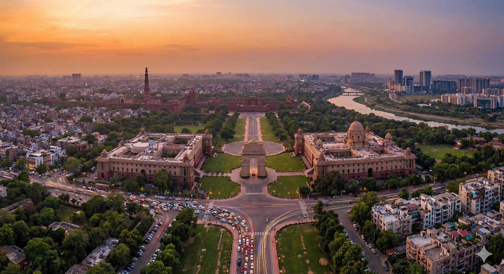

Delhi, officially known as the National Capital Territory (NCT) of Delhi, is located in northern India along the banks of the Yamuna River. The city is bordered by Haryana on three sides and Uttar Pradesh to the east. It lies at an average elevation of approximately 216 meters (709 feet) above sea level and has been a centre of political and cultural power for centuries.
Area: Approximately 1,484 Square Kilometres
Delhi is a dynamic blend of ancient heritage and modern development. Serving as the capital of India, it functions as the country’s political, administrative, and cultural hub. From historic Mughal-era monuments such as the Red Fort and Humayun’s Tomb to contemporary infrastructure and commercial districts, Delhi reflects the diversity and complexity of India.
Summer: April–June (Up to 45°C)
Monsoon: July–September (Moderate to Heavy Rainfall)
Winter: December–January (As low as 5°C)
Best Time: October to March
Time Zone: IST (UTC +5:30)
Population: ~32 Million
Languages: Hindi, English, Punjabi, Urdu, and other regional languages
Literacy: 89%
Republic Day: 26th Jan
Independence Day: 15th Aug
Gandhi Jayanti: 2nd Oct
Major Festivals: Diwali, Holi, Eid, Christmas, Navratri, Dussehra
Police: 100
Fire: 101
Ambulance: 102
Traffic Help: 1095
General Info: +91 88888 88888

Delhi’s rental market has experienced fluctuations over the years, especially during economic slowdowns, but it remains robust due to the city’s status as the political and cultural capital of India. Premium residential areas, particularly those preferred by expatriates and corporate executives, command significantly higher rents.
When choosing a residential location, factors such as transportation access, traffic congestion, and commuting time to workplaces or international schools are critical. While Delhi Metro is efficient and widely connected, expatriates generally prefer private vehicles or chauffeur-driven cabs for daily commuting due to comfort and safety. Public transport options include metro rail, buses, and auto rickshaws.
Preferred expatriate and high-end residential areas include:
South Delhi: Vasant Vihar, Chanakyapuri
(Diplomatic Enclave), Defence Colony, Greater Kailash, Friends
Colony, Panchsheel Park, Hauz Khas
Central Delhi: Golf Links, Jor Bagh, Sundar
Nagar, Civil Lines
Gurugram (NCR): DLF Phase I–V, Sushant Lok,
Golf Course Road
Noida (NCR): Sector 15A, Sector 44, Sector 93
South Delhi remains the most popular choice among expatriates due to its green surroundings, proximity to embassies, and access to international schools. Gurugram continues to grow rapidly because of its corporate hubs and airport connectivity.
Delhi offers a wide range of luxury and premium hotels suitable for short-term stays. Availability can be limited during peak business seasons, diplomatic events, and festivals, so advance booking is strongly recommended.
Popular options include The Imperial, The Oberoi, Taj Mahal Hotel, ITC Maurya, Le Méridien, and The Claridges.
Long-term housing options include apartments, builder floors, villas, and independent bungalows. Gated communities provide 24/7 security, power backup, maintenance services, and amenities such as gyms, swimming pools, and clubhouses.
Independent bungalows offer larger living spaces, private gardens, and higher privacy but require separate arrangements for security and maintenance. Villa communities in Gurugram and Noida combine privacy with shared community amenities.
Breakdown of available properties:
Availability: Limited in central areas, better
in suburban zones.
Types: Detached (~40%), Semi-detached
(~60%).
Style: 3–5 bedroom bungalows with attached
bathrooms, kitchens, living and dining areas, often with servant
quarters.
Average Age: 15–30 years.
New Construction (<5 years): ~15%.
Availability: Good, especially in South Delhi,
Gurugram, and Noida.
Building Type: Small buildings (~60%), Large
complexes (~40%).
Style: 2–4 bedroom homes with attached
bathrooms, modular kitchens, living and dining areas, and
balconies.
Average Age: 5–15 years.
New Construction (<5 years): ~20%.
Delhi offers housing options across a wide budget range, from modest residences to ultra-luxury homes in diplomatic and high-profile neighbourhoods, many of which feature parks and recreational spaces.
Serviced apartments are available across Delhi, Gurugram, and Noida and are generally categorized as follows:
A. Professionally Managed Serviced Apartments
• Fully furnished units with housekeeping, security, and
dedicated management teams.
B. Standalone Serviced Apartments
• Located within residential buildings; quality and services may
vary.
C. Guest Houses
• Single rooms with shared facilities; generally not preferred
by expatriates.
Always confirm internet availability, housekeeping services, laundry, and security arrangements before finalizing.
In Delhi, a security deposit of 2 to 6 months’ rent is standard, depending on the property type and landlord. The deposit is interest-free and refundable at the end of the lease term.
Confirm whether rent includes maintenance charges. Utility bills such as electricity, water, gas, and internet are usually paid separately by the tenant.
Furniture leasing is commonly available but is often pre-owned. Rental periods range from a few months to several years, with quality and style varying based on vendor availability.

Delhi has a comprehensive and well-established financial and banking ecosystem with a strong presence of public-sector, private-sector, and international banks. The city provides reliable banking, foreign exchange, and digital payment services catering to residents, expatriates, and multinational businesses.
The official unit of currency in India is the Indian Rupee (INR).
Credit cards are widely accepted across Delhi, particularly in shopping malls, hotels, restaurants, and major retail outlets.
Most banks issue credit cards with revolving credit limits and cash advance facilities.
RuPay, VISA, and MasterCard are widely accepted. American Express is generally accepted at premium hotels and high-end establishments and should be confirmed in advance.
Note: International credit card usage may attract foreign transaction fees. Please confirm applicable charges with your issuing bank.
Delhi has an extensive ATM network located across residential areas, metro stations, shopping malls, and commercial districts.
Traveller’s cheques are available at most nationalised and private banks, as well as authorised foreign exchange counters in Delhi.
Commonly available currencies include US Dollar and British Pound Sterling, with limited availability of other major currencies.
A valid passport is required when purchasing or encashing traveller’s cheques.
Banks in Delhi include government-owned public-sector banks, Indian private banks, and multinational banking institutions.
Typical Banking Hours:
Most banks operate between 09:30 – 15:30 or 10:00 – 16:00 on
weekdays, with limited hours on Saturdays.
Under Indian Foreign Exchange and Income Tax regulations, foreign nationals employed in India are generally permitted to open one bank account per city.
Relocation consultants or corporate HR departments may assist in opening the following account types:
Documentation requirements may vary by bank but generally include:
The account opening process typically takes 2 to 10 working days, subject to verification. ATM/debit cards are issued upon request.
All major banks in Delhi offer secure internet and mobile banking services, including:
Internet banking platforms are widely used, secure, and available 24/7 through mobile applications and web portals.

Common health risks in Delhi include cholera, dengue fever, dysentery, hepatitis A & B, malaria, meningitis, chikungunya, typhoid, and seasonal influenza. During and after the monsoon season, mosquito-borne illnesses are more prevalent.
Delhi also experiences high levels of air pollution, particularly during the winter months, which can aggravate asthma, bronchitis, and other respiratory conditions. Individuals with pre-existing respiratory ailments should take appropriate precautions.
It is strongly advised to ensure that all routine vaccinations are up-to-date prior to arrival, especially for long-term residents and families.
In a medical emergency, it is important to know the location of the nearest hospital. Traffic congestion in Delhi can significantly delay ambulance response times.
When possible, using a private vehicle or taxi to reach the emergency room is often faster. If transport is not feasible, call for an ambulance immediately.
Always carry personal identification such as your passport, visa, or Residential Permit (RP). Private hospitals may require advance or interim payments during treatment.
Delhi has an extensive network of hospitals, clinics, and medical specialists. Private hospitals are generally well-equipped with modern diagnostic facilities and English-speaking doctors.
Healthcare costs are relatively affordable compared to many international destinations, though premium private hospitals may charge higher fees.
Most medicines are easily available from pharmacies across Delhi, often without a prescription. However, antibiotics and certain controlled drugs require a valid prescription.
Many pharmacies operate 24 hours, especially near hospitals and in major residential or commercial areas.
Ambulance Emergency Number: 102
Police Emergency Number: 100

Education in Delhi is available from Kindergarten through Higher Education. Early education follows the kindergarten model, while primary and secondary education is governed by multiple national and international education boards.
Schools in Delhi are affiliated with various boards including Delhi State Board, Central Board of Secondary Education (CBSE), Council for the Indian School Certificate Examinations (CISCE), National Institute of Open Schooling (NIOS), Cambridge (IGCSE), and the International Baccalaureate (IB) .
After completing secondary education, students progress to Senior Secondary (Grades 11 and 12). Successful completion enables entry into colleges, universities, and professional institutions. Delhi hosts a large number of colleges and higher education institutions, including postgraduate and research centres.
As India’s capital city and home to numerous embassies and international organisations, Delhi has a strong presence of international schools catering to expatriates and globally mobile families.
Delhi has long been recognised as an education hub, with many institutions offering foreign language training for academic, professional, and migration purposes.
Electricity in Delhi is regulated by the Delhi Electricity Regulatory Commission (DERC) and distributed by companies such as BSES Rajdhani, BSES Yamuna, and Tata Power Delhi Distribution Limited.
Water supply in Delhi is managed by the Delhi Jal Board (DJB). Independent houses receive monthly or bi-monthly water bills.
Door-to-door garbage collection is available in most areas of Delhi, managed by municipal authorities or contracted private vendors. Gated communities may follow fixed collection schedules.
Bottled LPG cylinders are supplied by government-authorised agencies such as:
A refundable security deposit and proof of address are required for a new connection. Most households maintain two cylinders to avoid supply interruptions.
Delhi’s hot summers and monsoon season can lead to increased mosquito, cockroach, and rodent activity. Regular pest control is advisable for health and hygiene.
Recommended Frequency: Every 3–6 months. Ensure licensed agencies use WHO-approved chemicals, especially in homes with children or pets.

Once you move into your residence in Delhi, local cable network personnel will usually contact you or can be reached easily to set up a new cable connection. A nominal one-time installation fee is typically charged.
Installation generally takes 1–2 days. Thereafter, a monthly subscription fee is payable either in cash or through online payment methods. A receipt is issued for each payment.
Cable television services offer a wide range of national and international channels including STAR, Sony, Zee, ESPN, HBO, National Geographic, Discovery , along with regional and Hindi-language channels.
For an updated and complete channel list, it is advisable to consult your local cable operator.
Direct-To-Home (DTH) satellite television services are widely available across Delhi. Popular service providers include:
DTH services involve a one-time setup cost covering the dish antenna, receiver, and an initial subscription package. Installation usually takes 1–3 working days, subject to technician availability.
DTH providers offer standard-definition and HD channels across multiple languages. Subscription packs can be customised based on viewing preferences, and authorised dealers are available through local electronics stores and online service platforms.
Delhi has several FM and AM radio stations that broadcast free of charge. Listeners can tune in using a standard radio receiver, car audio system, or online streaming platforms.
Popular FM stations in Delhi include:
These stations broadcast music, talk shows, traffic updates, and local news throughout the day.
Delhi offers a wide selection of daily newspapers in English, Hindi, and other regional languages.
Popular English dailies include:
Popular Hindi dailies include:
Newspapers can be purchased from roadside vendors, subscribed to through local distributors, or accessed via online and digital editions.
Post offices are located throughout Delhi and provide a comprehensive range of postal and courier services through India Post as well as private courier companies.
Postal services available include:
For detailed information on postal services, delivery timelines, and applicable rates, visit your nearest post office or refer to the India Post website.

Telephone and broadband services in Delhi are widely available through both government-owned and private telecommunications providers, with extensive coverage across residential, commercial, and business areas.
Landline services are provided by BSNL (government-owned) and private operators such as Airtel, Vodafone Idea (Vi), and Jio.
Installation timelines vary by provider. BSNL landline installations generally take 7–14 days, while private providers usually complete setup within 2–5 working days.
Documents Required:
A refundable security deposit and installation charges are payable at the time of application. Monthly bills are generated with a clearly printed due date and should be paid on time to avoid temporary disconnection.
Bills can be paid online, at service provider offices, or through authorised payment centres. Most providers offer multiple tariff packages based on usage, which can be changed later if required.
In some cases, landlords may provide a pre-installed landline connection, in which case tenants are responsible only for the monthly rental and usage charges.
International calling can be activated upon request at the time of subscription. Applicable tariffs should be confirmed with the service provider.
All major telecom operators in Delhi support international calling. Users must request activation of this service before use.
The international dialling prefix used in India is 00, followed by the country code.
Public phone booths displaying PCO / STD / ISD signs are now extremely rare in Delhi due to widespread mobile phone usage. Residents are advised to rely on mobile or landline services for communication.
Delhi has excellent mobile network coverage with major GSM service providers including Airtel, Jio, and Vodafone Idea (Vi).
Operators offer a wide range of prepaid and postpaid plans to suit individual and corporate usage requirements.
Postpaid connections require an activation fee and a refundable security deposit. An additional deposit may be required for international roaming.
Prepaid “pay-as-you-go” SIM cards are widely available from authorised mobile outlets across the city.
As per government regulations, activation of any new mobile connection requires submission of a valid photo ID and proof of address.
Broadband and high-speed internet services in Delhi are offered by multiple operators, including:
Internet connections are primarily delivered through fiber-optic networks, providing high-speed and stable connectivity suitable for streaming, video conferencing, and remote work.
Coverage and service quality may vary by locality, so it is advisable to confirm area-specific availability before finalising a connection.
Service packages differ by speed and data limits and can usually be upgraded or downgraded later based on usage requirements.

Delhi offers a wide range of public and private transportation options suitable for residents, professionals, and expatriates. The city is connected through app-based cabs, auto rickshaws, buses, taxis, and an extensive metro rail network that also links surrounding NCR areas.
For expatriates, the use of cabs or chauffeur-driven cars on hire is generally recommended due to comfort, safety, and ease of navigation in heavy traffic conditions.
App-based cab services operate extensively across Delhi and are the most commonly used mode of transport for daily commuting and airport travel.
Bookings are made through mobile applications by entering your pickup location and destination. Traffic in Delhi can be aggressive, and some drivers may have limited English proficiency.
Auto rickshaws are a common and convenient mode of transport for short-distance travel in Delhi.
Passengers should insist on using the meter and avoid paying more than the displayed fare. If the meter is not operational, agree on the fare before starting the journey.
Night-time fares (between 23:00 hrs and 05:00 hrs) may be charged at 1.5 to 2 times the standard meter rate.
Public bus services in Delhi are operated by the Delhi Transport Corporation (DTC) and Cluster Bus Services.
Buses connect almost all parts of the city and NCR. While buses can be crowded during peak hours, air-conditioned and electric buses offer a more comfortable travel option.
The Delhi Metro is one of the largest and most efficient metro systems in India, covering nearly all major areas of the city and connecting to NCR regions such as Gurugram, Noida, Ghaziabad, and Faridabad.
The metro is widely used by professionals and expatriates due to its reliability, safety, and predictable travel times.
Name: Indira Gandhi International Airport
(IGI)
Location: Palam, approximately 16 km from
Connaught Place (city centre)
Connectivity:
Auto rickshaws are not permitted inside the airport terminal area but are available in nearby designated zones.
Both international and local car rental companies operate in Delhi, offering self-drive and chauffeur-driven options.
Given Delhi’s traffic conditions, chauffeur-driven vehicles are generally recommended. If your employer has a corporate tie-up with a rental agency, contracted rates may be available.
Always note the meter reading and time when the vehicle starts and ends duty. Retain parking receipts or record them on the duty slip.
Driving in Delhi is not recommended for those unfamiliar with local traffic conditions. Lane discipline is limited, congestion is frequent, and traffic rules may not always be followed.
For expatriates who own a vehicle, employing a professional driver is strongly advised.
Importing a vehicle into India is permitted but expensive. Import duty is approximately 150% of the CIF value (cost, insurance, and freight). It is advisable to consult a shipping agent before making arrangements.
When purchasing a car, motorcycle, or scooter in Delhi, consider the following factors:
Used vehicles are widely available, but ownership documents should be carefully verified and purchases made through reputable dealers.
Self-drive rental options include:

Indian nationals and foreign nationals, including persons of Indian origin, transferring their residence to Delhi or arriving in India for employment are permitted to import personal effects and household goods into India duty-free, subject to eligibility conditions and prevailing customs regulations.
For Indian nationals, the following criteria must be fulfilled:
For foreign nationals, the following conditions apply:
Shipments arriving outside the prescribed timelines may be cleared only on a case-by-case basis, subject to customs approval.
It is essential that the owner arrives in India before the shipment. Failure to do so may result in high demurrage or container detention charges.
Shipments destined for Delhi are typically cleared at Indira Gandhi International Airport (IGI) for air cargo or at major sea ports such as Mumbai (JNPT), followed by inland transportation to Delhi.
The earlier requirement of a mandatory one-year stay in India after availing Transfer of Residence (TR) benefits has been removed. Importers may exit India after claiming TR concessions.
Old and used personal effects and household goods are permitted duty-free, provided they have been used by the shipper and the individual holds a valid one-year visa.
Examples include:
The following items are permitted at a concessional duty rate of 15% for one unit of each item, subject to a combined value limit of ₹5,00,000, irrespective of prior usage:
The concessional duty of 15% applies only to the first unit of each eligible item.
If additional units are imported or if the combined value exceeds ₹5,00,000, a higher customs duty of 35% will be levied on the excess quantity or value.
Import duties on alcoholic beverages, wines, and spirits are extremely high in India and typically assessed at approximately 200% of the declared value.

Delhi has a well-established and diverse expatriate community, supported by long-standing social, cultural, and charitable organisations that help newcomers integrate smoothly into city life.
One of the most prominent organisations is the Overseas Women’s Club (OWC) of Delhi, a social and charitable association comprising women from many nationalities and cultural backgrounds.
OWC is known for being warm and welcoming to new members and provides valuable guidance during the transition to life in Delhi. Members enjoy regular social gatherings such as Thursday morning coffee meetings at The Imperial Hotel and monthly meetings held on Monday mornings at The Oberoi.
The organisation hosts a wide range of activities, social events, and fund-raising initiatives, many of which support local charities. These events provide excellent opportunities to make new friends from around the world while contributing to meaningful causes.
As the capital of India and a major centre for politics, history, and culture, Delhi offers an extensive range of entertainment and leisure activities for residents and expatriates alike.
Whether you enjoy watching movies, socialising at clubs, shopping, attending cultural performances, or relaxing with family, Delhi provides diverse options to unwind from a busy professional lifestyle.
Delhi was among the first cities in North India to adopt the multiplex cinema culture. Many theatres are located within shopping malls, offering a complete entertainment experience.
Delhi’s vibrant cultural scene is reflected in its many auditoriums and performance venues hosting music, dance, theatre, and cultural programs.
Art enthusiasts will find a wide variety of galleries showcasing both contemporary and traditional Indian art.
Delhi and its surrounding NCR region offer several family-friendly recreational options, particularly for weekend outings.
Delhi’s strategic geographical location makes it an ideal base for exploring North India. Several popular destinations are easily accessible for weekend trips and short holidays.

Shopping in Delhi is a remarkable and diverse experience, combining centuries-old bazaars with modern shopping malls and luxury retail destinations. As the capital of India and a major political, cultural, and commercial hub, Delhi reflects a unique blend of cosmopolitan and traditional lifestyles.
With a large and diverse working population, the city offers everything from apparel, footwear, jewellery, and electronics to traditional handicrafts, handloom products, antiques, and luxury goods. Whether you are looking for silk and cotton fabrics, carpets, brassware, meenakari jewellery, designer wear, or high-end consumer products, Delhi truly is a shopper’s paradise.
Shopping districts in Delhi are spread across both Old and New Delhi, featuring traditional markets with shops aligned along historic streets as well as modern malls that house multiple retail outlets under one roof.
Located in the heart of the city, Connaught Place is one of Delhi’s most iconic commercial hubs. Its colonial-era white colonnaded buildings house a wide range of stores, from international brands and bookshops to handicraft emporiums and department stores.
The adjacent Janpath market is especially popular for street shopping and handicrafts sourced from across India, making it a favourite spot for both locals and visitors.
One of the oldest and busiest markets in Delhi, Chandni Chowk is a maze of narrow lanes offering textiles, jewellery, spices, electronics, and street food. It is particularly famous for bridal wear, zari embroidery, and traditional fabrics.
Dariba Kalan is known for silver jewellery and silverware, while Khari Baoli is Asia’s largest wholesale spice market.
A major shopping district in central Delhi, Karol Bagh is well known for garments, cosmetics, books, and jewellery. Ajmal Khan Road is popular for ready-made garments and branded clothing, while Bank Street is famous for gold jewellery.
Located in South Delhi, this vibrant market is popular for fabrics, traditional Indian clothing, footwear, accessories, and home décor. It is also a great destination for bargain shopping.
One of Delhi’s most famous street markets, Sarojini Nagar offers trendy clothes, bags, shoes, and accessories at very affordable prices. It is especially popular among students and young professionals.
Known for its upscale boutiques, designer stores, and bookstores, Khan Market caters to a premium clientele. The area also features gourmet food outlets, cafés, and lifestyle stores.
An open-air cultural market showcasing handicrafts, textiles, and regional cuisines from different states of India. Each stall is operated directly by artisans and craftsmen, offering an authentic cultural shopping experience.
Located in East Delhi, Gandhi Nagar Market is Asia’s largest wholesale textile market, offering a vast range of fabrics at competitive wholesale prices.
Apart from these major markets, every locality in Delhi has its own neighbourhood market with grocery stores, supermarkets, pharmacies, and daily convenience shops.
A premium shopping destination in South Delhi featuring international and Indian brands, multiplex cinemas, fine dining restaurants, and open-air plazas for events and leisure.
A popular mall offering a wide mix of fashion brands, cafés, and entertainment options, suitable for casual shopping and family outings.
Delhi’s leading luxury mall, housing high-end international designer brands, premium lifestyle stores, and upscale dining options.
A large and family-friendly mall in West Delhi with a broad selection of retail outlets, multiplex cinemas, gaming zones, and restaurants.
One of the largest malls in Delhi, combining shopping, dining, entertainment zones, and leisure spaces under one roof.
A convenient shopping and entertainment hub in South West Delhi featuring retail stores, food courts, and cinema halls.
Delhi’s shopping landscape offers a seamless mix of traditional markets and modern retail spaces, allowing residents and expatriates to enjoy everything from cultural craftsmanship and everyday essentials to luxury brands and contemporary global fashion.